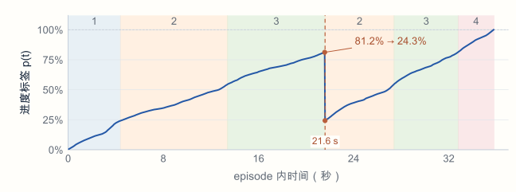

研究动机EVO-Inter 介入时机与介入动作的自动化 研究基础：EVO-RL EVO-RL 通过人工介入补充纠正经验，利用优势估计筛选高价值数据，迭代更新机器人策略。在这一过程中，介入时机的判断和纠正动作的提供仍依赖人工。 01何时介入？ 当前：人工判断人工观察执行过程，判断机器人是否需要接管。 02如何恢复？ 当前：人工提供动作人工接管并执行纠正动作，帮助机器人继续完成任务。 研究目标减少持续人工监控与接管的需求，让机器人在必要时自主恢复。
现有介入时机 · 统计与一致性检测EVO-Inter VLA-FAIL 的两类失败检测信号 LLMD：Token 级马氏距离 比较当前 token 特征与微调数据分布。 单个 token 的特征分布示意 蓝点表示训练特征，椭圆表示分布形状。橙色菱形表示偏离训练分布的当前特征。对所有 token 分别计算后取最大值。 特征维度 2 特征维度 1 均值 μₖ 当前特征 zₜ,ₖ 偏离训练分布 单个 token 的分布示意 sLLMD(t)= maxk δt,kT (Σk+λI)−1 δt,k δₜ,ₖ = zₜ,ₖ − μₖ；Σₖ 为该 token 的协方差。固定先验噪声提取特征，减少动作采样噪声的干扰。 ACC：动作块一致性 比较两次预测在重叠时刻的动作差异。 比较连续动作块的重叠部分 示例动作块长度为六步，每次执行两步。上一次预测的第三至第六步，与本次预测的第一至第四步，对应相同的未来执行时刻。 对齐同一未来时刻 上一次预测 本次预测 a₁a₂a₃ a₄a₅a₆ a₁a₂a₃ a₄a₅a₆ ΔΔΔΔ 已执行 重叠 4 步（示意：H = 6，R = 2） s^ACC(t)= meani,d |aR+i,dt−1−ai,dt| vd(t) i 为重叠步，d 为动作维度；v 为速度归一化尺度。对上述分数做时序平滑，降低短暂重规划的影响。 触发方式任一分数超过校准阈值，即发出失败报警。
现有介入时机 · 进度与价值趋势EVO-Inter UniIntervene 的时序价值风险 将近期价值增长与期望进展比较，通过窗口内的累计进展缺口识别持续停滞。 正常推进 价值持续上升 示意价值从 0.12 持续上升到 0.72。淡蓝色区域标出近期窗口，窗口内仍然持续取得进展。图中没有表示实际触发阈值。 00.51 价值 V近期窗口 过去当前时刻 t 价值持续增长，进展缺口较小。 短暂回退 短暂下降后重新积累价值 价值先上升至 0.44，短暂下降至 0.22，随后回升至 0.72。下降带来进展缺口，后续增长可以抵消部分缺口，是否触发仍取决于完整窗口、参数和风险估计。 00.51 价值 V近期窗口 过去当前时刻 t 后续增长可抵消部分进展缺口。 持续停滞 近期窗口内持续缺少价值增长 价值上升至约 0.42 后，连续多步停留在 0.42 至 0.43，窗口内的价值增量持续不足，累积正向进展缺口。这是原理示意，不是实验结果。 00.51 价值 V近期窗口 过去当前时刻 t 价值增长持续不足，累积正向缺口。 风险头的监督目标 Rt= (1−Vt) ∑i=0K−1 γri [ε−ΔVt−i] Vₜ 为未来条件价值估计，ΔVₜ = Vₜ − Vₜ₋₁。 在线判定风险头结合未来表征与价值历史预测风险，介入分数达到阈值时触发恢复。
介入判定 · 视频案例EVO-Inter 出现异常，是否就需要介入？ ACC 的失败指示有限 失败轨迹中，ACC 也有较长的低值区间。 当前浏览器无法播放此视频，请使用下方的“放大查看”链接。 失败轨迹对照 · 离线重算，阈值未校准放大查看 进度回退 ≠ 无法恢复 本例进度分数回退后，任务最终仍然完成。 当前浏览器无法播放此视频，请使用下方的“放大查看”链接。 画面进度：6.0 s / 11.9% 10.4 s / 100%放大查看 核心问题判断当前策略是否仍能自主恢复，再决定是否介入。
现有介入动作 · UniInterveneEVO-Inter 记忆引导的目标条件恢复 从历史经验中检索恢复目标，再由目标条件策略生成纠正动作。 检索恢复目标，再生成纠正动作 介入触发后，用当前观测与任务指令检索历史记忆库中相似的失败情境，取出同一历史轨迹中对应的后续高价值状态作为恢复目标。目标条件恢复策略同时接收这个目标、当前观测和任务指令，生成纠正动作块。图中的 A、B、C 是示意条目。 当前观测 + 任务指令 已触发介入 当前失败情境 观测 · 任务指令 检索 历史经验记忆库 失败情境 后续高价值状态 情境 A 目标 A 情境 B→目标 B 情境 C→目标 C 选定 恢复目标 目标 A 的观测与状态 条件 目标条件恢复策略 结合当前状态生成动作 纠正动作块 01当前失败情境介入触发后，以当前观测与任务指令检索记忆库。 02历史经验记忆库匹配相似的失败情境，取出对应的后续高价值状态。情境 A→目标 A 03恢复目标目标 A 的观测与状态。 04目标条件恢复策略输入恢复目标、当前观测与任务指令。↓ 生成纠正动作块 策略训练：用历史“失败 → 目标”片段中的动作做行为克隆。 局限记忆库未覆盖的失败情形，可能难以检索到合适的恢复目标。
基本方案 · 状态与进度建模EVO-Inter 子任务状态与任务进度联合预测 将融合历史信息的当前视觉表征与子任务状态输入 VLM，预测下一时刻的状态和进度。 VLM 的输入与下一时刻监督目标 历史视觉信息与 t 时刻的三视角视觉特征先进行时序融合，得到包含历史信息的当前三视角 embedding，再与 nowid、finishid、restid 一起输入 VLM。VLM 预测 t+1 时刻的三个状态字段和任务进度 p(t+1)，进度允许回退。图中使用子任务切换时刻作示例：当前拿起螺钉，nowid 为 2，finishid 为空，restid 为 1、3、4、5；下一时刻拿起套筒，nowid 为 1，finishid 为 2，restid 为 3、4、5。子任务名称是对应编号的说明，图中未给出示例进度数值。 历史视觉信息 当前三视角特征 · t 时序融合 视角 1 · tembedding₁ 视角 2 · tembedding₂ 视角 3 · tembedding₃ 当前子任务状态 · t 拿起螺钉 nowid2 finishid∅ restid1,3,4,5 VLM 状态与进度预测 预测 监督目标 · t+1 拿起套筒 nowid1 finishid2 restid3,4,5 p(t+1) 连续任务进度 · 允许回退 输入 · t 历史视觉信息 + 当前三视角特征 ↓ 时序融合 融合历史的当前视觉 embedding 视角 1 · tembedding₁视角 2 · tembedding₂视角 3 · tembedding₃ 当前子任务状态拿起螺钉 nowid2finishid∅restid1,3,4,5 VLM 监督目标 · t+1拿起套筒 nowid1finishid2restid3,4,5 p(t+1)：连续任务进度，允许回退。 nowid：当前步骤finishid：已完成步骤restid：待执行步骤 后续用途为介入时机判定与候选恢复动作评分提供状态、进度依据。
训练标签 · 视频分段标注EVO-Inter 用 Astra 标注子任务片段 对视频标注子任务、执行顺序与时间边界，形成状态与进度监督所需的分段信息。 原始视频经 Astra 标注后对齐到原视频帧 提供 30 FPS 原始视频和子任务清单，以 5 FPS 采样视频供 Astra 标注子任务及其起止时间，再将分段结果对齐到原视频帧索引。 原始视频 · 30 FPS Astra 标注 · 5 FPS 对齐原视频帧 完整轨迹与子任务清单 标注子任务与起止时间 保留状态标签与帧区间 原始视频 · 30 FPS完整轨迹与子任务清单 Astra 标注 · 5 FPS标注子任务与起止时间 对齐原视频帧保留状态标签与帧区间 螺钉装配 · 分段标签示例 子任务nowidfinishid*restid5 FPS 时间 / s30 FPS 原帧 拿起螺钉2∅1,3,4,525.2–30.0756–905 拿起套筒123,4,530.2–32.4906–977 将螺钉和套筒对齐31,24,532.6–35.8978–1079 将螺钉插入套筒41,2,3536.0–37.21080–1121 将装配好的组件放入盒子51,2,3,4∅37.4–39.41122–1187 * finishid 由全部步骤扣除 nowid 与 restid 后补全；∅ 表示空集合。时间为采样点时间，原帧区间含首尾。 标签用途为逐帧状态监督与连续进度计算提供子任务边界。
训练标签 · 离线进度计算EVO-Inter 可回退的逐帧进度标签 按视觉变化在子任务内分配进度；当已完成步骤需要重做时，撤销相应贡献。 01逐帧视觉变化 δt=‖φt−φt−1‖2 φₜ 为当前帧的视觉编码。 02段内归一化 按变化量分配段内贡献；同一子任务以末次成功段的总变化量设定预算。 03回退扣减 需重做的步骤重新出现时，扣回已有贡献。 Ct=Ct−1+Δct−Rt,pt=CtCT Δcₜ：当前帧贡献；Rₜ：需重做步骤的已有贡献。Cₜ：累计贡献；C_T：最终累计值。 重新拿起螺钉时，进度标签回退  file-001 / episode 5 · 按已有进度数据重绘查看完整原图 四阶段：1 套筒 · 2 螺钉 · 3 对齐并插入 · 4 入盒（对齐与插入合并） 监督目标保留“已完成 → 需重做”的状态变化，让进度标签能够回退。
介入时机 · 拟议判定规则EVO-Inter 基于停滞与重试的介入判定 跟踪 restid 与预测进度的时序变化，在持续无进展时触发介入。 01持续停滞 restid 长时间不变，且预测进度没有有效增长。 剩余步骤不变，进度持续停滞 原理示意。剩余步骤 restid 始终为 4、5；预测进度在早期上升后长时间持平。淡蓝区域表示停滞观察窗口，窗口达到时长阈值 T s 时触发介入。没有给定实际时长或实验分数。 restid {4,5}{4,5}{4,5}{4,5} 预测进度 持续时间 ≥ Ts 过去当前时刻 t 停滞时长达到 Ts → 触发介入 02多次重试 restid 循环出现，进度反复回退且没有持续改善。 剩余步骤反复循环，进度未持续改善 原理示意。restid 在 4、5 与 5 之间反复切换，又回到 4、5；每次进度增长后再次回退，未形成持续改善。图中只画出两个循环以说明模式，不表示实际重试阈值为二。循环次数达到待标定阈值 N r 时触发介入。 restid {4,5}{5}{4,5}{5}{4,5}… loop 1loop 2 预测进度 过去当前时刻 t 循环次数达到 Nr → 触发介入 判定原则保留自主恢复窗口；恢复推进则继续执行，停滞或重试超限再介入。
介入动作 · 未来表征预测EVO-Inter 动作条件 JEPA 的训练 以当前 latent 和动作为条件，预测未来 latent，再由进度模型评估动作结果。 状态与动作训练序列，以及对应的视觉 latent 训练轨迹为 s1 经动作 a1 到 s2，再经 a2 到 s3，再经 a3 到 s4，再经 a4 到 s5。各时刻的三视角观测由相同的视觉编码器和历史融合模块得到 z1 至 z5。每个 zi 只融合截至 i 时刻的观测。 训练轨迹 s₁s₂s₃s₄s₅ a₁a₂a₃a₄ 视觉表征 z₁z₂z₃z₄z₅ 每个 si 为三视角观测；zi 由同一视觉编码器与历史融合模块得到，包含截至 i 时刻的信息。 动作条件 latent 预测与进度评分 当前 zi 和执行动作 ai 输入动作条件预测器 F，得到预测的下一时刻 latent。训练时将预测 latent 与真实后继观测编码得到的 zi+1 对齐；真实后继仅作为训练目标。预测 latent 随后与子任务状态一起输入我们的 VLM，输出预测进度。VLM 以已有进度标签监督，预测 latent 需与其视觉输入空间一致。 当前 latentzi 执行动作 ai 动作条件预测器F(zi, ai) 预测 latentẑi+1 真实后继 latentzi+1 我们的 VLM结合子任务状态预测进度 预测进度p̂i+1 训练时对齐 动作条件预测 当前 latent zi（含视觉历史） + 执行动作 ai ↓动作条件预测器 F ↓预测未来 latent ẑi+1 训练目标：真实后继观测编码得到的 zi+1。 进度评分预测 latent + 子任务状态 → 我们的 VLM → 预测进度 p̂i+1 拟议训练目标 L=‖z^i+1−zi+1‖22+λLSIGReg(Z) SIGReg 约束批次表征分布；VLM 用第 8 页的进度标签监督，预测 latent 需与其视觉输入空间一致。
介入动作 · 生成与选择EVO-Inter 恢复动作的生成与选择 VLA 局部采样生成候选，经 JEPA 预测与我们的 VLM 评分，选择预测进度 P 最大的动作。 VLA 局部采样、JEPA 预测、VLM 评分与最大进度动作选择 已触发介入。VLA 根据当前观测、任务指令和历史信息提出基准动作，围绕该动作局部采样并保留原提议，得到 K 个候选。每个候选动作与融合视觉历史的当前 latent 一起输入 JEPA，预测对应的未来 latent。将各预测 latent 与当前子任务状态输入我们的 VLM，得到一一对应的进度分数 P1 至 PK。选择分数最大的候选动作作为恢复动作执行。 已触发介入 观测 · 指令 · 历史 VLA 提出基准动作 a(0) 局部采样 小幅扰动 · 保留原提议 K 个候选动作 {a(k)} 当前 latent zt 已融合视觉历史 JEPA 逐个预测动作结果 K 个未来 latent {ẑ(k)} 当前子任务状态 nowid / finishid / restid 我们的 VLM 预测任务进度 K 个进度分数 P(1) P(2) ⋮ P(K) 候选动作、预测 latent 与 P 分数一一对应 取最大的 P → 执行对应候选动作 a(k*) 恢复动作生成与选择的纵向流程图 触发介入后，当前观测、指令与历史输入 VLA。第一步，VLA 提出基准动作，局部采样得到 K 个候选并保留原提议。第二步，各候选动作和融合视觉历史的当前 latent 输入 JEPA，得到 K 个未来 latent。第三步，各未来 latent 和当前 nowid、finishid、restid 输入我们的 VLM，输出一一对应的进度分数。取最大的 P，执行对应的候选动作作为恢复动作。 已触发介入 当前观测 · 任务指令 · 历史信息 01 · VLA 局部采样 VLA a(0) 局部采样 小幅扰动 · 保留原提议 K 个候选动作 a(1) a(2) … a(K) 当前 latent zt 已融合视觉历史 02 · JEPA 预测各动作的结果 K 个未来 latent ẑ(1) ẑ(2) … ẑ(K) 当前子任务状态 nowid / finishid restid 03 · 我们的 VLM 预测任务进度 与候选一一对应的进度分数 P(1) P(2) … P(K) 选取最大的 P 执行对应候选动作 a(k*) 局部采样 a(k)=a(0)+ε(k),‖ε(k)‖≤ρ 动作选择 k*=arg maxkP(k),arec=a(k*) 在连续动作维度内采样；ρ 为采样半径，P(k) 为第 k 个候选对应的预测进度。 待验证假设有效恢复动作位于 VLA 提议动作附近，局部采样能够覆盖这些动作。